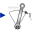

PartialOneFrame_bBase model for components providing one frame_b connector + outer world + assert to guarantee that the component is connected |
Information
This information is part of the Modelica Standard Library maintained by the Modelica Association.
This partial model provides one frame_b connector, access to the world object and an assert to check that the frame_b connector is connected. Therefore, inherit from this partial model if the frame_b connector is needed and if this connector should be connected for a correct model.
Connectors (1)
| frame_b |
Type: Frame_b Description: Coordinate system fixed to the component with one cut-force and cut-torque |
|---|
Components (1)
| world |
Type: World |
|---|
Extended by (5)
|
Modelica.Mechanics.MultiBody.Forces.Internal
External torque acting at frame_b, defined by 3 input signals |
|
|
Modelica.Mechanics.MultiBody.Forces.Internal
External force acting at frame_b, defined by 3 input signals |
|
|
Modelica.Mechanics.MultiBody.Forces
External force and torque acting at frame_b, defined by 3+3 input signals and resolved in frame world, frame_b or in frame_resolve |
|
|  |
Modelica.Mechanics.MultiBody.Forces
External torque acting at frame_b, defined by 3 input signals and resolved in frame world, frame_b or frame_resolve |
|
Modelica.Mechanics.MultiBody.Forces
External force acting at frame_b, defined by 3 input signals and resolved in frame world, frame_b or frame_resolve |